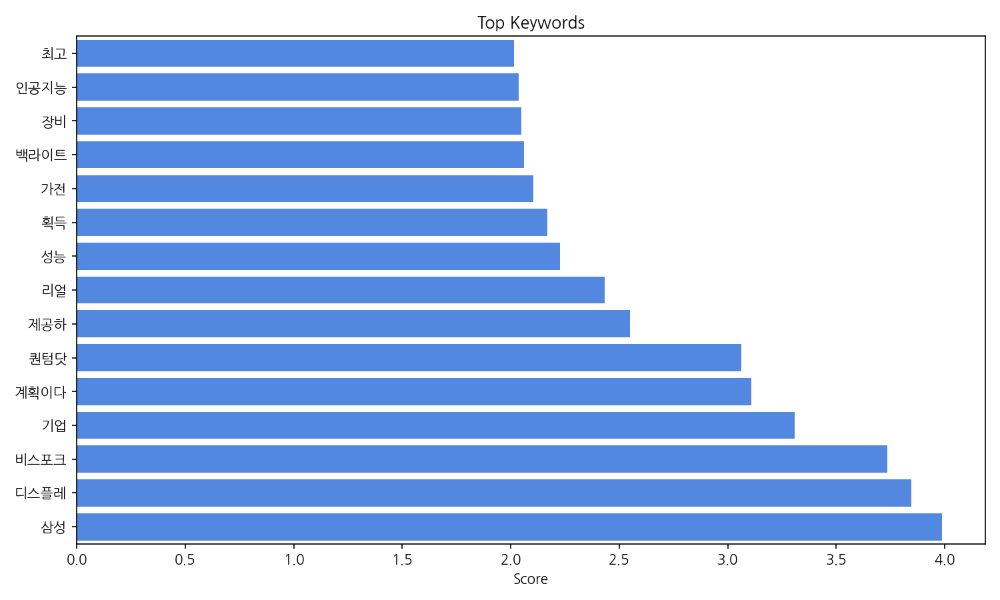
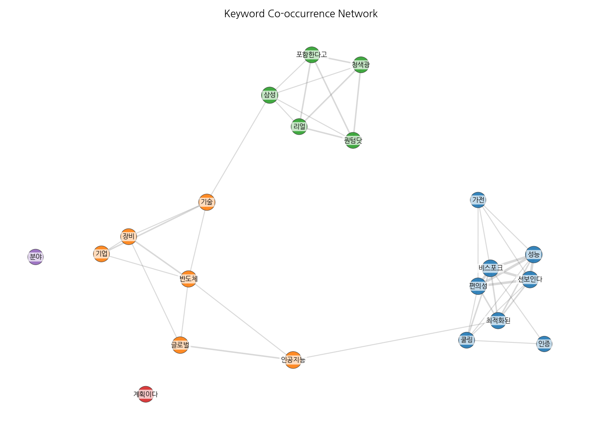
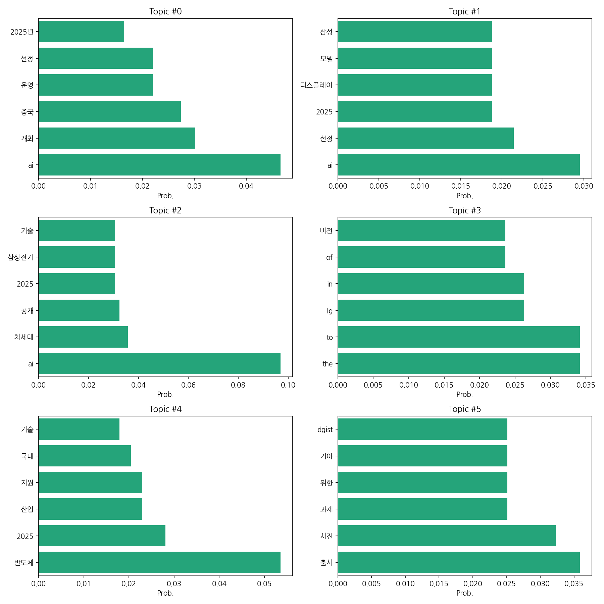
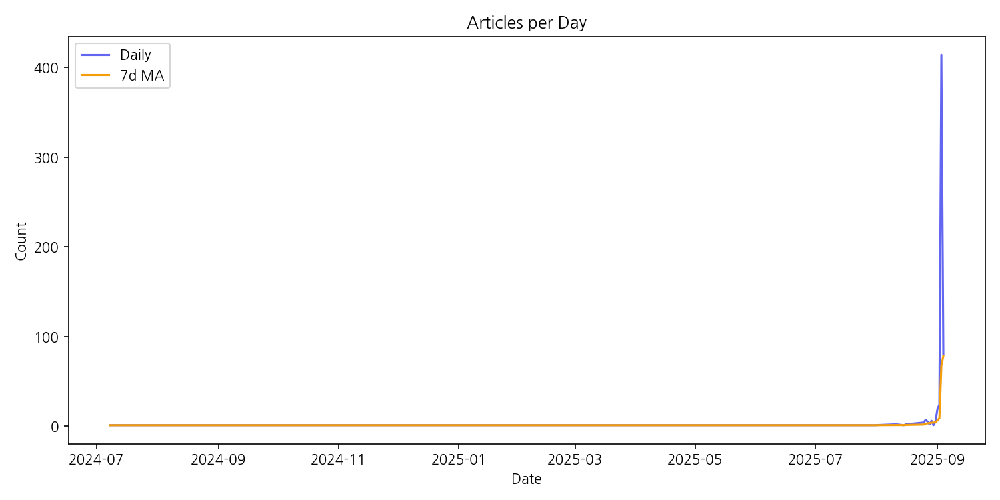

이번 기간 핵심 토픽과 키워드, 주요 시사점을 요약합니다.
핵심 맥락 설명: 제공된 데이터는 2025년을 중심으로 한국 뉴스에서 AI 기술, 특히 삼성과 LG 등 주요 기업의 AI 및 차세대 기술 개발과 관련된 보도가 집중되고 있음을 보여줍니다. 반도체 산업 지원 및 인재 확보와 관련된 뉴스도 상당하며, 중국과의 경쟁 및 국제적인 기술 시장 동향 또한 주요 관심사임을 알 수 있습니다. 전반적으로 한국의 AI 및 관련 기술 산업의 발전과 미래 전략에 대한 높은 관심과 논의가 활발하게 이루어지고 있음을 시사합니다.
최근 변화/스파이크: 2025년 9월 초에 AI 및 관련 기술 뉴스의 급격한 증가가 관찰됩니다. 특히 9월 3일에는 414건의 기사가 등장하며 이전까지의 추이와 비교할 수 없을 정도의 급격한 상승세를 보였고, 이후에도 높은 수치를 유지하고 있습니다. 이는 특정 대형 행사, 정책 발표 또는 기술적 돌파구 등의 외부 요인에 의한 것으로 추정됩니다.
실무 인사이트:
긴급 상황 분석 및 대응: 9월 초 기사 급증 원인을 즉시 조사하여, 해당 이슈에 대한 정확한 정보를 파악하고, 회사의 전략 및 대응 방안을 재검토해야 합니다. 이는 시장 변화에 대한 신속한 대응과 기회 선점에 필수적입니다.
| Rank | Keyword | Score |
|---|---|---|
| 1 | 삼성 | 3.986 |
| 2 | 디스플레 | 3.847 |
| 3 | 비스포크 | 3.734 |
| 4 | 기업 | 3.308 |
| 5 | 계획이다 | 3.11 |
| 6 | 퀀텀닷 | 3.063 |
| 7 | 제공하 | 2.55 |
| 8 | 리얼 | 2.431 |
| 9 | 성능 | 2.227 |
| 10 | 획득 | 2.168 |
| 11 | 가전 | 2.104 |
| 12 | 백라이트 | 2.061 |
| 13 | 장비 | 2.05 |
| 14 | 인공지능 | 2.037 |
| 15 | 최고 | 2.014 |




핵심 맥락 설명: 제공된 데이터는 2025년을 중심으로 한국 뉴스에서 AI 기술, 특히 삼성과 LG 등 주요 기업의 AI 및 차세대 기술 개발과 관련된 보도가 집중되고 있음을 보여줍니다. 반도체 산업 지원 및 인재 확보와 관련된 뉴스도 상당하며, 중국과의 경쟁 및 국제적인 기술 시장 동향 또한 주요 관심사임을 알 수 있습니다. 전반적으로 한국의 AI 및 관련 기술 산업의 발전과 미래 전략에 대한 높은 관심과 논의가 활발하게 이루어지고 있음을 시사합니다.
최근 변화/스파이크: 2025년 9월 초에 AI 및 관련 기술 뉴스의 급격한 증가가 관찰됩니다. 특히 9월 3일에는 414건의 기사가 등장하며 이전까지의 추이와 비교할 수 없을 정도의 급격한 상승세를 보였고, 이후에도 높은 수치를 유지하고 있습니다. 이는 특정 대형 행사, 정책 발표 또는 기술적 돌파구 등의 외부 요인에 의한 것으로 추정됩니다.
실무 인사이트:
긴급 상황 분석 및 대응: 9월 초 기사 급증 원인을 즉시 조사하여, 해당 이슈에 대한 정확한 정보를 파악하고, 회사의 전략 및 대응 방안을 재검토해야 합니다. 이는 시장 변화에 대한 신속한 대응과 기회 선점에 필수적입니다.
| Idea | Target | Value Prop | Score |
|---|---|---|---|
| AI 기반 스마트 물류 솔루션 제공 | 국내 중소 물류업체 (직원 수 50-200명, 연매출 50억-200억) | AI 기반의 최적화된 물류 경로 및 배송 시스템을 제공하여 운영 효율을 극대화하고 비용을 절감합니다. 실시간 데이터 분석을 통해 예측 정확도를 높이고, 고객에게 정확한 배송 정보를 제공하여 만족도를 향상시킵니다. 경쟁사 대비 AI 알고리즘의 정확도와 실시간 데이터 처리 속도가 월등히 높습니다. | 3.8 |
| AI 기반 스마트팩토리 솔루션 제공 | 국내 중소 제조업체 (직원 수 50-500명, 연매출 100억-500억) | 클라우드 기반의 저렴하고 사용하기 쉬운 AI 기반 스마트팩토리 솔루션을 제공하여 생산성을 향상시키고 불량률을 감소시킵니다. 기존 시스템과의 손쉬운 연동을 지원하며, 전문가가 아니더라도 쉽게 사용할 수 있도록 직관적인 인터페이스를 제공합니다. 맞춤형 컨설팅과 교육을 통해 중소기업의 성공적인 디지털 전환을 지원합니다. | 3.5 |
| AI 기반 개인 맞춤형 건강 관리 서비스 | 건강에 대한 관심이 높지만 시간적 제약이 있는 20-40대 직장인, 특히 만성 질환 예방 및 건강 증진에 관심 있는 여성 | AI 기반 개인 맞춤형 건강 관리 서비스는 사용자의 생활 습관, 건강 상태, 유전 정보 등을 분석하여 개인에게 최적화된 건강 관리 계획을 제공합니다. 다양한 건강 정보와 전문가의 상담을 제공하며, 사용자의 참여도를 높이기 위한 게임화 요소를 도입하여 지속적인 건강 관리를 지원합니다. 경쟁 서비스와 달리, 사용자의 프라이버시 보호에 중점을 두고 데이터 관리 및 보안에 힘쓰는 것이 차별점입니다. | 3.5 |
| AI 기반 스마트팜 솔루션 제공 | 중소 규모 스마트팜 운영 농가 (100평-500평 규모, 연매출 5000만원-2억원) | AI 기반의 사용자 친화적인 인터페이스를 통해 농작물 생육 환경을 실시간으로 모니터링하고, 최적의 재배 조건을 자동으로 제어하여 생산성을 향상시키는 솔루션입니다. 경쟁 솔루션 대비 저렴한 가격과 간편한 사용법으로 농가의 접근성을 높였으며, 지속적인 데이터 분석을 통해 맞춤형 재배 전략을 제공합니다. | 3.5 |
| AI 기반 소상공인 맞춤형 마케팅 솔루션 | 연 매출 1억원 미만의 소상공인 (음식점, 카페, 소매점 등) | AI 기반 데이터 분석을 통해 소상공인의 특성과 고객 특징을 파악하여, 맞춤형 마케팅 전략을 제시합니다. 최적의 광고 채널 및 예산 배분을 자동화하여 효율성을 높이고, 고객 관리 시스템을 통해 고객 충성도를 향상시킵니다. 복잡한 마케팅 업무를 간소화하여 소상공인의 시간과 자원을 절약하고, 데이터 기반의 성과 측정을 통해 투자 대비 효과를 극대화합니다. | 3.5 |